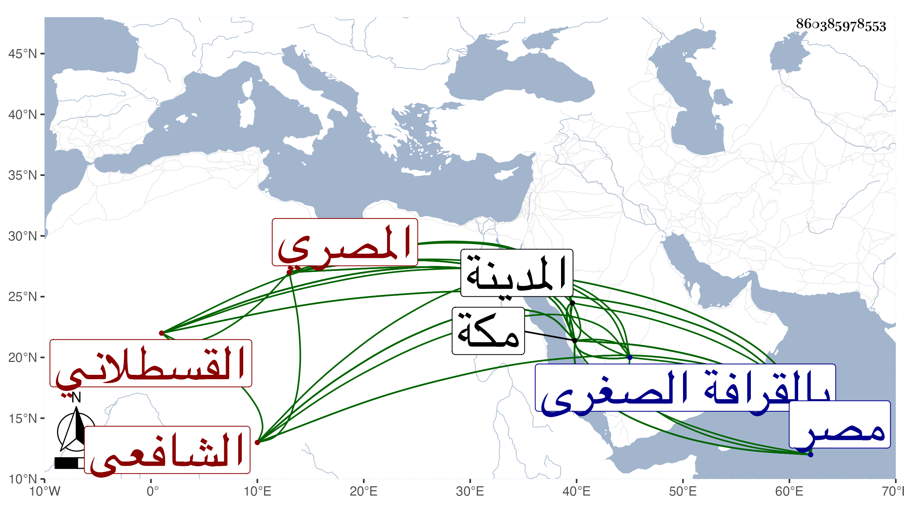

0902Sakhawi.DawLamic.ITO20230111-ara1.EIS1600.860385978553
Biography ID: 860385978553
313
أحمد بن محمد بن أبي بكر بن عبد الملك بن الزين أحمد بن الجمال محمد بن الصفي محمد بن المجد حسين بن التاج علي القسطلاني الأصل المصري الشافعي ويعرف بالقسطلاني وأمه حليمة ابنة الشيخ أبي بكر بن أحمد بن حميدة النحاس . ولد في ثاني عشري ذي القعدة سنة إحدى وخمسين وثمانمائة بمصر ونشأ بها فحفظ القرآن والشاطبيتين ونصف الطيبة الجزرية والوردية في النحو ، وتلا بالسبع على السراج عمر بن قاسم الأنصاري النشار وبالثلاث إلى وقال الذين لا يرجون لقاءنا على الزين عبد الغني الهيثمي ، وبالسبع ثم بالعشر في ختمتين على الشهاب بن أسد وبالسبع لجزء من أول البقرة على الزين خلد الأزهري ، وكذا أخذ القراءات عن الشمس بن الحمصاني إمام جامع ابن طولون والزين عبد الدائم ثم الأزهري وأذن له أكبرهم وأخذ الفقه عن الفخر المقسي تقسيما والشهاب العبادي وقرأ ربع العبادات من المنهاج ومن البيع وغيره من البهجة على الشمس البامي وقطعة من الحاوي على البرهان العجلوني ومن أول حاشية الجلال البكري على المنهاج إلى أثناء النكاح بفوت في أثنائها على مؤلفها وعن العجلوني أخذ النحو قرأ عليه شرح الشذور لمؤلفه والحديث عن كاتبه قرأ عليه قطعة كبيرة من شرحه على الهداية الجزرية وسمع مواضع من شرحه على الألفية وكتبه بتمامه غير مرة ثم قرأ منه بمكة أكثر من ثلثه ، ولازمني في أشياء وسمع على المتون والرضي الأوجاقي وأبي السعود الغراقي وقرأ الصحيح بتمامه في خمسة مجالس على النشاوي وكذا قرأ عليه ثلاثيات مسند أحمد وسمع عليه مشيخة ابن شاذان الصغرى وغيرها ، وحج غير مرة وجاور سنة أربع وثمانين ثم سنة أربع وتسعين وستين قبلها على التوالي . ورجع مع الركب فتخلف بالمدينة وقرأ بمكة على زينب ابنة الشوبكي السنن لابن ماجه وغيرها وعلى النجم بن فهد وآخرين وصحب البرهان المتبولي وغيره وجلس للوعظ بالجامع الغمري سنة ثلاث وسبعين وكذا بالشريفية بالصبانيين بل وبمكة وكنا يجتمع عنده الجم الغفير مع عدم ميله في ذلك وولي مشيخة مقام أحمد بن أبي العباس الحراز بالقرافة الصغرى وأقرأ الطلبة وجلس بمصر شاهدا رفيقا لبعض الفضلاء وبعده انجمع وكتب بخطه لنفسه ولغيره أشياء بل جمع في القراءات العقود السنية في شرح المقدمة الجزرية في التجويد والكنز في وقف حمزة وهشام على الهمز وشرحا على الشاطبية وصل فيه إلى الإدغام الصغير زاد فيه زيادات ابن الجزري من طرق نشره مع فوائد غريبة لا توجد في شرح غيره وعلى الطيبة كتب منه قطعة مزجا وعلى البردة مزجا أيضا سماه مشارق الأنوار المضية في مدح خير البرية قرضته أنا وجماعة وله أيضا نفائس الأنفاس في الصحبة واللباس والروض الزاهر في مناقب الشيخ عبد القادر ونزهة الأبرار في مناقب الشيخ أبي العباس الحرار وتحفة السامع والقاري بختم صحيح البخاري ورسائل في العمل بالربع وأظنه أخذه عن العز الوفائي . وهو كثير الأسقام قانع متعفف جيد القراءة للقرآن والحديث والخطابة شجي الصوت بها مشارك في الفضائل متواضع متودد لطيف العشرة سريع الحركة وقد قدم مكة أيضا بحرا صحبة ابن أخي الخليفة سنة سبع وتسعين فحج ثم رجع معه كان الله له .
